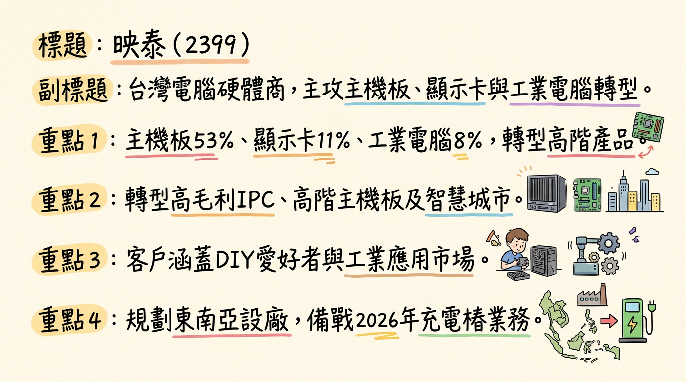
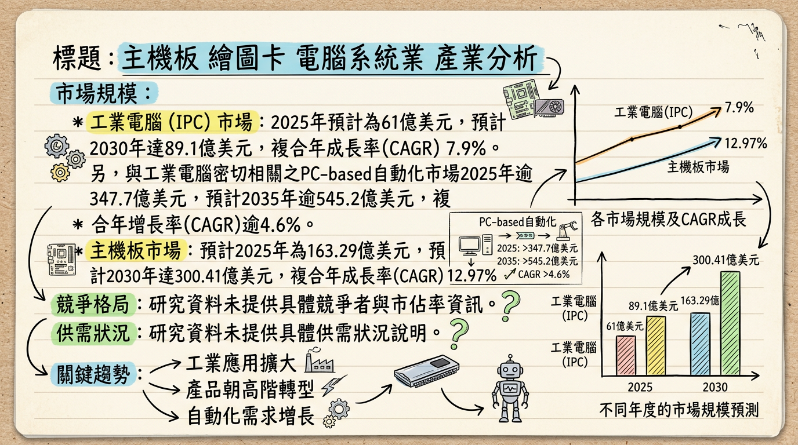
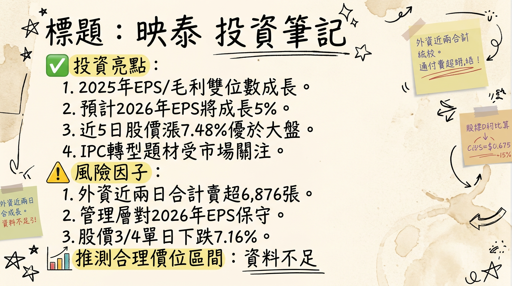

2399 映泰 深度研究報告
一句話摘要
映泰(2399)正積極從傳統消費性板卡轉型為工業電腦(IPC)與高階解決方案供應商，透過切入智慧城市、AI邊緣運算及電動車充電樁等新興市場，已取得歐洲智慧城市大單，預期2026年營運將迎來顯著成長動能，儘管短期仍面臨消費性市場逆風與上游晶片供應挑戰。
公司概覽
映泰主要從事電腦主機板、工業電腦（IPC）和顯示卡（VGA卡）的設計、研發、製造和銷售。近年來，公司積極從消費性板卡轉型，專注於毛利較佳的工業電腦、高階主機板以及嵌入式系統領域，並切入智慧城市、AI邊緣運算及電動車充電樁等應用場景。
映泰各產品營收佔比 (2025年前二季資料)
| 產品線 | 營收佔比 |
|---|
| 主機板 | 53% |
| 顯示卡 | 11% |
| 工業電腦 | 8% |
| 其他產品 | 28% |
映泰總部位於台灣新北市，負責研發、營運及銷售。在中國大陸廣東省深圳市設有生產設施。公司已評估前往東南亞建置產能，為2026年下半年充電樁業務高速成長做準備。
核心競爭優勢
策略轉型聚焦高附加價值產品： 映泰積極從低毛利的消費性板卡轉向毛利較佳的工業電腦(IPC)、高階主機板及嵌入式系統，並切入具成長潛力的智慧城市、AI邊緣運算及電動車充電樁等利基型市場。
邊緣AI技術整合能力： 攜手MemryX等AI晶片新創，展出整合AI加速器的工業電腦系統，主打低功耗與即時AI推論效能，展現其在邊緣AI領域的技術布局與創新能力。
歐洲市場大單斬獲： 已成功拿下歐洲智慧城市大單，顯示其IPC解決方案獲得國際客戶認可，為未來營收成長提供具體支撐。
多元成長動能佈局： 除了智慧城市與邊緣AI，亦積極發展電動車充電樁控制板業務，並計畫跟進佈局AI伺服器領域，為公司提供多重成長引擎。
財務分析
月營收趨勢
| 月份 | 金額 (億元新台幣) | 月增率 MoM | 年增率 YoY |
|---|
| 2026年01月 | 1.42 | +7.95% | -18.03% |
| 2025年12月 | 1.32 | +23.19% | -12.75% |
| 2025年11月 | 1.07 | +33.32% | +9.62% |
| 2025年10月 | 0.80 | -46.23% | -35.13% |
| 2025年09月 | 1.49 | +5.11% | -17.24% |
| 2025年08月 | 1.42 | -18.58% | +7.49% |
季度數據
| 項目 | 2025年第三季 | 2025年第二季 (上半年累計) |
|---|
| 季營收 | 未明確公布 | 9.5億元 |
| 毛利率 | 6.53% | 5.8% (較去年同期8.2%下滑) |
| 營業利益率 | -7.23% | 未提供 |
| 營業淨損 | 未提供 | -7,814萬元 |
| 稅前淨損 | 未提供 | -6,878萬元 |
| 本期淨損 | 未提供 | -4,915萬元 |
| EPS (元) | 0.17 | -0.28 |
年度趨勢
| 年度 | 全年營收 (億元新台幣) | 全年EPS (元新台幣) |
|---|
| 2024 | 20.19 | 0.04 |
| 2025 (預估) | 法人預估雙位數衰退 | 累計至2025Q3為-0.11 |
法說會重點 (2025年10月03日)
- 營運展望： 映泰對2026年整體營運表示審慎樂觀，預期將優於2025年。看淡2025年第四季營運表現。
- 新訂單進展： 已成功拿下歐洲智慧城市大單，預計最快2026年開始貢獻業績，為工業電腦（IPC）業務帶來顯著增長。在歐洲市場已有客戶進行IPC領域的概念驗證（POC），預計最快2026年第一季會有相關訂單落地並開始貢獻營收。
- 產品策略調整： 公司產品策略正從過去的中低階產品轉向以價值為導向的高階產品，專注於電競、工業電腦等利基型產品線，以提升整體獲利能力。
- 業務佔比： 消費性板卡仍是映泰最大的營收來源。目前IPC業務營收佔比約1成多，預計年底可維持在1成左右。
- 晶片供應狀況： 因英特爾和超微等晶片廠優先出貨資料中心產品，導致PC相關CPU和GPU的供應不穩，影響出貨節奏，此狀況預計將延續到2026年第一季。
- 產能利用率/資本支出： 未提供具體資料。
- 財務預測： 公司並未提供對未來季度或全年度的具體財務預測、營收目標或獲利指引，僅表示2026年營運將優於2025年。
券商觀點
目前搜尋結果未明確提供至少3家券商針對「映泰」(2399) 在2025-2026年間具體且明確的目標價資訊。部分資料提及映泰的股價區間和市場對其IPC轉型後的期待，但無具體券商名稱與目標價。
| 券商名稱 | 目標價 (新台幣) | 評等 | 日期 | 備註 |
|---|
| N/A | N/A | N/A | N/A | 未能獲取具體券商目標價資訊 |
| N/A | N/A | N/A | N/A | |
| N/A | N/A | N/A | N/A | |
未找到各券商對2025-2026年映泰EPS的具體預估數字。
評等調整： 未找到最近映泰有重大調升/調降評等的相關資訊。
財報深度分析
利潤率趨勢
映泰近四季的利潤率趨勢波動較大，顯示營運仍面臨挑戰。
| 年度/季別 | 毛利率 (%) | 營業利益率 (%) | 稅後淨利率 (%) |
|---|
| 2025Q3 | 6.53 | -7.23 | 6.52 |
| 2025Q2 | 3.63 | -11.19 | -13.38 |
| 2025Q1 | 7.71 | -5.52 | 2.28 |
| 2024Q4 | 7.33 | -10.06 | -2.66 |
| 2024Q3 | 11.03 | -3.04 | -5.16 |
| 2024Q2 | 5.05 | -8.33 | 1.67 |
| 2024Q1 | 9.22 | -1.69 | 5.26 |
- 營收下滑與本業獲利能力不佳：營業收入在2023年達高峰後，2024年顯著下滑至20.19億元。2025年第二季累計營收僅9.5億元，若按此趨勢全年營收將持續衰退，電腦主機板及顯示卡等主要產品營收大幅下滑是主因。
- 匯率因素影響：2025年上半年營運受到新台幣急遽升值影響，對第二季營收造成約10%的負面衝擊，並嚴重侵蝕毛利率。2025年第二季單季產生約1.2億元的匯兌損失，抵銷了股票投資獲利，導致稅前轉虧。
- 營業費用率上升：營業費用佔營業收入比重從2023年的11.3%增至2025年第二季的14.0%，顯示營運效率下降或固定成本壓力增大。
- 產品組合相對穩定：主機板、工業電腦、顯示卡及其他產品的營收佔比相對穩定，顯示利潤率的波動主要來自外部因素及消費性板卡業務的壓力。
存貨與營運
映泰的存貨週轉天數呈現下降趨勢，顯示庫存管理效率有所改善。應收帳款週轉天數也有所下降，但整體回收速度仍慢於過去。
| 年度/季別 | 存貨金額 (億元新台幣) | 存貨週轉天數 (天) | 應收帳款週轉天數 (天) |
|---|
| 2025Q3 | 未明確公布 | 61.94 | 40.77 |
| 2025Q2 | 3.35 | 72.16 | 44.12 |
| 2025Q1 | 未明確公布 | 74.29 | 41.10 |
| 2024Q4 | 3.95 | 110.69 | 59.79 |
根據法說會資訊，映泰在去化庫存方面取得良好進展，存貨金額與週轉天數的下降，表明銷售速度加快，庫存管理效率改善，並無異常堆積現象。
資本支出
| 年度/季別 | 資本支出金額 (千元新台幣) |
|---|
| 2025Q3 | -146,906 |
| 2024Q4 | 192,604 (註) |
| 2024Q3 | -79,618 |
(註：負值表示現金流出，代表資本支出；正值可能表示處分資產或收回投資，需留意其組成。)
未來資本支出計畫與預計新增產能未找到具體數據，但公司已評估前往東南亞建置產能，為2026年下半年充電樁業務高速成長做準備，暗示未來在相關領域可能會有資本投入。
業外收支重大項目
2025年上半年業外收入及支出淨額為936萬元，較2024年同期的1.35億元大幅減少。主要原因是2025年第二季產生約1.2億元的匯兌損失，抵銷了股票投資的獲利。2024年雖有淨利，但主要受益於高額的營業外收入，而非本業營運改善。
股權異動
近期董監事/大股東申報轉讓紀錄
最近一年（截至2026年3月3日），未找到映泰董監事或大股東申報轉讓持股的相關資料。
庫藏股買回紀錄
未找到映泰在2024-2026年期間有庫藏股買回的紀錄。
可轉換公司債 (CB)
未找到映泰在2024-2026年期間有發行可轉換公司債的相關資訊。
增減資計畫
映泰曾進行現金增資。2025年6月20日為現增除權日，停止過戶期間為2025年4月22日至2025年6月20日。具體的增資張數和認購價格等細節未明確找到。
股利政策
映泰近年股利發放不穩定，2024及2025年均未發放股利。
| 股利所屬期間 | 現金股利 (元/股) | 股票股利 (元/股) | 現金殖利率 (%) |
|---|
| 2024年 | 0 | 0 | 0 |
| 2023年 | 0 | 0 | 0 |
| 2022年 | 1.2 | 0 | 7.36 |
產業分析
市場規模與CAGR成長率
| 產業細分 | 2025年市場規模 | 2026年市場規模預估 | 預測期 CAGR | 預測區間 |
|---|
| 工業電腦 (IPC) | 56億美元 / 61億美元 | 65.7億美元 | 3.86% / 7.6% / 6.8% | 2026-2034 / 2026-2030 / 2025-2030 |
| 主機板 | 163.29億美元 | 預計7,976.8萬片出貨 | 12.97% / 2.3% | 2025-2030 / 2025年出貨成長 |
| 顯示卡 | 235.7億美元 / 590.8億美元 | 276.4億美元 / 771.8億美元 | 17.0% / 30.6% | 2026-2034 / 2025-2026 |
- 顯示卡： 受AI需求影響，NVIDIA預計2026年將大幅削減GPU供應近五成，加上高頻寬記憶體(HBM)與企業級DRAM需求暴增，導致消費級顯示卡與記憶體供應同步吃緊，市場面臨稀缺與價格上漲。
- 工業電腦 (IPC)： 歷經2023-2024年去庫存後，2025年可望復甦。然而，記憶體缺貨推升價格，使PC與IPC產業面臨壓力，2026年市場前景轉趨保守，業者面臨「貨源短缺比漲價更棘手」的情況。
- 主機板： DIY用戶在高階應用上的需求增加，以及加密貨幣挖礦潮回溫，帶動純主機板出貨量成長。但記憶體短缺推升PC與主機板成本，可能影響2026年PC市場前景。
產業的平均毛利率水準：
- 工業電腦產業： 龍頭研華預估2026年第一季毛利率為38%~40%。記憶體價格上揚可能使其2026年毛利率較2025年略為下滑。
- 顯示卡/主機板產業： 因AI晶片需求排擠效應導致記憶體成本飆升，可能使終端產品價格上漲，高階產品利潤預期較好。目前未找到2025-2026年整體產業平均毛利率數據。
競爭格局
顯示卡 (獨立GPU) 市場佔有率 (2025年)
| 公司 | 2025年Q2市佔率 | 2025年Q3市佔率 |
|---|
| NVIDIA (輝達) | 94% | 92% |
| AMD (超微) | 6% | 7% |
| Intel (英特爾) | 微乎其微 | 1% |
研華(2395-TW)市占率常被估算在50%～60%左右。其他主要參與者包括康創科技、西門子、霍尼韋爾國際公司、羅克韋爾自動化、通用電氣發那科、施耐德電氣、ABB、橫河電機。未找到2025-2026年全球工業電腦前五大公司及其確切市佔率的最新數據。
映泰 vs 主要競爭對手的具體比較：
- 技術： 映泰積極轉型高附加價值領域如智慧城市、AI邊緣運算，與研華、凌華等IPC領先者在邊緣AI佈局趨同。顯示卡方面，NVIDIA在AI技術整合領先。
- 產能： 映泰總部位於台灣，製造設施在中國深圳。未有與主要競爭對手如華碩、技嘉、研華等具體產能數據比較。
- 客戶： 映泰產品在DIY愛好者和工業應用市場佔有一席之地。IPC業務客戶涵蓋智慧製造、工廠自動化等。
- 價格： 受記憶體短缺影響，顯示卡及主機板成本普遍上升，映泰作為板卡供應商受上游晶片策略影響較大，高階產品利潤相對較佳。
台灣同業比較 (IPC領域，2025年營收預估)
| 公司名稱 | 預估營收 (億元新台幣) | 2025年毛利率 | 2025年EPS (元) |
|---|
| 研華 (2395-TW) | 715.5 | 約39.78% | 12.25 |
| 凌華 (6166-TW) | 101.49 | 未提供 | 未提供 |
| 研揚 (6579-TW) | 估計雙位數增長 (2024年71.86億) | 未提供 | 未提供 |
| 艾訊 (3088-TW) | 估計雙位數增長 (2024年68.93億) | 未提供 | 未提供 |
| 飛捷 (6206-TW) | 抱持高度信心 (2024年46.06億) | 未提供 | 未提供 |
| 映泰 (2399) | 法人預估雙位數衰退 | 約5.8% (H1) | -0.11 (Q3累計) |
產業趨勢
AI與邊緣運算 (Edge AI) 的融合與加速：
* 影響： AI邊緣運算、機器視覺成為工業電腦市場主要成長驅動力，帶動即時影像辨識。顯示卡在AI和機器學習工作負載中扮演關鍵角色，NVIDIA GeForce RTX SUPER等產品旨在增強生成式AI能力。
記憶體供應緊張與價格上揚：
* 影響： AI對HBM與企業級DRAM需求暴增，導致標準型記憶體結構性缺貨，推升消費性電子成本通膨。DDR5價格短期內倍數上漲，衝擊下游電子產業。顯示卡廠商可能調整產品線，PC平均售價預計上漲6%至8%。
工業4.0與自動化、智慧製造：
* 影響： 工業4.0和工業IoT加速自動化和機器人整合，對惡劣環境下堅固耐用、高效能運算需求成長，推動工業用電腦市場發展。PC-based自動化支援即時數據分析、遠端監控及與工業物聯網設備整合。
對映泰而言的具體機會和威脅：
*
轉型工業電腦與高階產品： 公司積極轉型與AI邊緣運算、工業4.0趨勢高度契合，具市場潛力。
* AI應用擴展： 邊緣AI在智慧製造、智慧城市、機器視覺等應用日益重要，映泰在高階主機板和工業電腦領域的佈局將受惠。
* 高階主機板需求： DIY用戶在高階應用需求增加，可帶動映泰主機板業務成長。
*
記憶體短缺與價格上漲： 將直接增加映泰生產成本，並可能衝擊其消費性板卡及工業電腦產品的終端需求。
* 消費性PC市場競爭與萎縮： 傳統DIY顯示卡市場萎縮，AI PC滲透率雖高但消費者支付意願低，可能影響映泰消費性業務表現。
* 主要晶片供應商策略調整： NVIDIA將核心資源集中於AI業務，可能導致高階消費性顯示卡供貨受限，映泰需快速應對上游策略轉向。
相關投資題材的具體連結：
- AI (人工智慧)： 映泰的工業電腦及高階主機板業務受惠於AI邊緣運算、機器視覺、智慧工廠等AI應用需求。
- HBM (高頻寬記憶體)： HBM需求暴增導致產能排擠傳統DRAM，間接影響映泰記憶體採購成本及板卡產品供應。
- 電動車： 映泰已獲客戶認證並小量出貨AC交流電充電樁控制板，並推出ARM架構新品，積極爭取歐洲充電樁市場，直接連結電動車充電樁題材。
近期催化劑
利多事件
- 2026年3月3日： 資金押注IPC轉型題材，法人買盤與主力近5日偏多支撐技術結構。
- 2026年1月9日： 宣布攜手美國AI晶片新創MemryX於CES 2026展出先進邊緣AI解決方案，展示整合MemryX MX3 M.2 AI加速器的EdgeComp MU-N150工業電腦系統。
- 2025年11月25日： 積極切入工業電腦（IPC）應用，鎖定邊緣AI領域，聚焦智慧製造、智慧城市雙主軸。
- 2025年10月27日： 管理層預計最快本季可望拿下歐洲客戶訂單。產品策略轉向高階產品，專注電競、工業電腦等利基型產品線，旨在提升獲利能力。
- 2025年10月22日： 成功拿下歐洲智慧城市大單，預計2026年迎來業務收割期，最快2026年第一季可望開始貢獻營收。
- 2025年8月22日： 攜手MemryX參展2025自動化展，展出多款結合MemryX AI加速運算技術的EdgeComp系統，應用於機器人、智慧製造、物聯網基礎建設與智慧城市建設。
- 2025年6月22日： 董事長表示將深耕PC市場、切入AI邊緣運算，副總目標2026年AI邊緣產品營收占比從目前約10%提升至30%以上。
利空/風險事件
- 2026年3月4日： 映泰(2399)盤中股價下跌7.16%，三大法人合計賣超2,844張，其中外資賣超2,849張。
- 2026年2月11日： 映泰2026年1月營收為1.42億元，年減18.03%。
- 2025年10月4日法說會： 上游晶片（Intel和AMD等）供貨不穩，優先出貨資料中心產品，導致PC相關CPU、GPU供應受到排擠，預計延續到2026年第一季。
- 2025年上半年財報： 營運受新台幣急遽升值導致的匯兌損失（約1.2億元）影響，侵蝕毛利率並導致稅前淨損。
⭐ 成長動能時間軸
| 時間點 | 成長動能 | 具體內容 |
|---|
| 2025年底 | AI邊緣運算產品發酵 | AI邊緣運算產品預計開始發酵，已有超過十家新客戶展開概念驗證（POC）。目標2026年AI邊緣產品營收占比從目前約10%提升至30%以上，成為未來營收與獲利主力。 |
| 2026年Q1 | 歐洲智慧城市大單貢獻營收 | 已成功拿下歐洲智慧城市大單，IPC領域的概念驗證（POC）客戶預計最快在本季會有相關訂單落地並開始貢獻營收。 |
| 2026年Q1 | 上游晶片供應不穩緩解 | 上游晶片廠供貨不穩（Intel和AMD等優先出貨資料中心產品，導致PC相關CPU、GPU供應排擠）預計將於此季度結束，有助於傳統板卡業務穩定出貨。 |
| 2026年上半年 | 產品結構調整效益顯現 | 持續從中低階產品轉向以價值為導向的高階產品，專注於電競、工業電腦等利基型產品線，旨在提升整體獲利能力。 |
| 2026年下半年 | 電動車充電樁業務高速成長 & 東南亞產能建置 | 電動車充電樁業務已獲客戶認證並小量出貨AC交流電充電樁控制板，DC直流電充電樁產品線已就緒。為此業務高速成長準備，已評估前往東南亞建置產能，並將爭取歐洲充電樁市場機會。 |
| 中長期 (2026後) | AI伺服器領域佈局深化 | 隨著超微（AMD）推出AI加速器產品線，映泰將跟進佈局AI伺服器領域，尋求新的高性能運算市場機會。 |
| 持續 | 智慧製造與物聯網基礎建設應用 | 持續展出結合MemryX AI加速運算技術的EdgeComp系統，應用於機器人、智慧製造、物聯網基礎建設等場景，加速邊緣AI解決方案的落地與普及。 |
2026 展望
成長動能：
工業電腦(IPC)業務爆發： 歐洲智慧城市大單預計2026年開始顯著貢獻營收，且AI邊緣運算產品預期營收佔比將提升至30%以上，成為主要成長引擎。
電動車充電樁市場拓展： 隨著東南亞產能建置及在北美、歐洲市場的深耕，充電樁業務有望於2026年下半年進入高速成長期。
產品結構優化： 轉向高毛利電競及IPC利基型產品線，將有助於整體毛利率改善。
AI伺服器新契機： 跟進AMD佈局AI伺服器領域，有望開拓新的高性能運算市場。
終端需求回溫： 晶片廠供貨不穩情況預計在2026年第一季結束，有助於PC相關板卡業務穩定出貨。
風險：
記憶體成本壓力： 全球記憶體供應緊張及價格上漲，可能持續侵蝕毛利率，並影響產品終端售價與需求。
消費性市場波動： 傳統消費性板卡市場競爭激烈且趨於飽和，若IPC轉型速度不如預期，消費性業務的表現仍將拖累整體獲利。
匯率風險： 外部匯率波動仍是映泰營運的不確定因素，2025年上半年已證明其對獲利的負面影響。
新業務初期成本： 擴廠至東南亞及新產品線的研發與市場拓展，初期可能帶來較高的資本支出和費用。
競爭加劇： IPC市場競爭激烈，映泰作為新進入者需面對研華等龍頭的強大競爭。
綜合來看，映泰2026年營運面臨轉型期的關鍵時刻，新業務的成長動能強勁，但傳統業務的挑戰與宏觀風險仍需密切關注。
投資結論
轉型效益可期，2026年為關鍵轉捩點： 映泰積極從消費性板卡轉型至高毛利的工業電腦(IPC)及AI邊緣運算領域，已取得歐洲智慧城市大單，並規劃將AI邊緣產品營收佔比提升至30%以上。管理層對2026年營運抱持審慎樂觀態度，預期將優於2025年，顯示其轉型策略正逐步見效。
多元成長引擎驅動，但獲利結構待證明： 除了IPC與邊緣AI，映泰在電動車充電樁控制板業務方面亦有所斬獲，並評估東南亞擴廠，形成多角化成長動能。然而，公司過去本業獲利能力不佳，且業外匯損影響顯著，新業務對整體利潤率的實際拉抬效果及能否實現規模化獲利仍是未來觀察重點。
上游供應鏈風險與成本壓力持續： 儘管晶片供應不穩情況預計在2026年Q1緩解，但全球記憶體價格上揚的趨勢可能持續，對映泰的生產成本與終端售價造成壓力，進而影響毛利率表現。
財務結構改善，但現金流需穩定： 映泰在去化庫存方面取得進展，存貨週轉天數下降，負債比率亦有所改善。然而，應收帳款回收速度變慢，且自由現金流量波動較大，顯示在營運擴張的同時，仍需加強現金流管理。
投資建議： 考量映泰的轉型潛力與2026年預期成長動能，儘管短期財報仍有壓力且消費性市場面臨逆風，但若新業務如歐洲智慧城市大單及AI邊緣產品能如期、甚至超預期貢獻營收與獲利，其合理價值區間可望向上修正。建議投資人密切關注公司未來季報中IPC業務的實際營收佔比、毛利率改善情況，以及新訂單的獲利能力。
預期合理目標價區間為 NT$28 - NT$35。
本報告由 AI 自動產生，資料來源為公開網路資訊，僅供參考，不構成投資建議。產生時間：2026-03-06 13:03
📊 資訊卡


